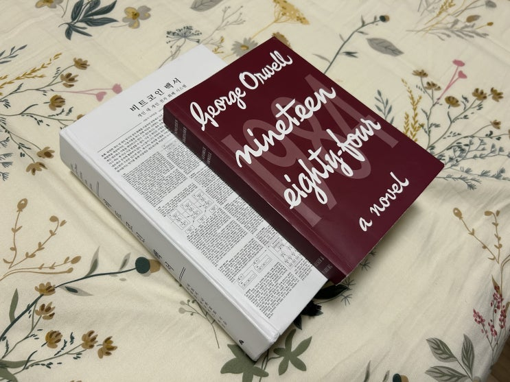
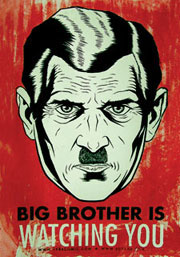
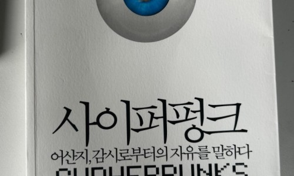

표지는 영어이나 내용은 한글입니다
휴가 기간동안 두 권의 책을 읽었습니다.

빅브라더라는 용어를 만들어낸 1984를 먼저 읽기 시작했는데, 역시 소설이라 그런지 훅훅 잘 넘어가고 무엇보다도 무척 재미있었습니다.

대형이 당신을 보고 있다 어릴 적에 빅 브라더를 '대형' 으로 번역한 버전으로 읽긴 했는데, 다시 한번 읽고 싶어져서 읽게 된 책입니다. 모든 고전이 그렇듯이 읽을 때 마다 또 새로운 느낌이 다르게 다가오는 책이었습니다.
고전이긴 하지만, 반전이 있으니 혹시 책을 읽어보고 싶으신 분께서는 여기서 그만 보시는 것을 추천합니다
*****결말 및 반전 스포일러 있음***** 책은 3부로 구성이 되어 있습니다.
1부는 주인공 윈스턴이 사는 세상을 묘사하고 성실한 당원인 윈스턴이 주변에(당과 국가에) 의심을 품어가는 과정입니다.
우리가 아는 빅브라더가 지배하는 세상이 얼마나 우울한지가 잘 나옵니다.
2부는 윈스턴이 줄리아와 행복한 시간을 보내는 내용입니다. 하지만 동시에 파멸로 가기 위한 플래그를 서서히 세우는 단계이기도합니다. 당의 눈을 피해 사랑을 나누는 두 사람은 언젠가 파멸할 운명인 것을 잘 알면서도 현재에 충실하기로 하죠. 물론 파멸은 그들이 예상한 것 과 같이 갑자기 찾아옵니다.
3부는 줄리아와의 행복의 시간이 파멸로 끝난 후 윈스턴이 애정부에서 오브라이언의 애뜻한 사랑과 보살핌을 통해 정상인으로 회복 당하는(?) 내용입니다.
어릴 적에는 1부 부분이 머릿속에 강렬하게 남았는데, 빅브라더가 감시하는 사회에 대한 무서움이 있있기 때문입니다. 하지만 나이를 먹고 보니 생각보다 야했던 2부와 3부에서 윈스턴이 오브라이언의 사랑을 통해 회복당하는 과정이 더욱 절절 히 와닿습니다.
“아니란 말이네!
자백을 받아 내기 위해서도, 벌을 주기 위해서도 아니야, 왜 자네를 이리 데려왔는지 말해줄까?
치료하기 위해서야!
자네를 온전한 정신을 지닌 사람으로 만들기 위해서라고! ” 세상의 끝에서 사랑을 외치는 오브라이언 사랑의 힘은 정말 절절해서, 우리의 마음속 깊은 곳 까지도 바꾸게됩니다. 3부의 사랑의 과정을 통해 윈스턴은 2부에서 절대 변하지 않을꺼라 다짐한 자신의 진심까지도 변화합니다.
그들이 할 수 없는게 하나 있어요.
그들은 당신이 무엇이든 말하게 할 수 있어요.
뭐든지요.
하지만 믿게 할 수는 없어요.
당신 마음속에까지 들어갈 수는 없으니까요.
2부에서 줄리아와 대화하는 윈스턴 결국 오브라이언의 헌신과 깊은 사랑의 힘을 통해 윈스턴은 정상인으로 되돌아온 후 마음속 깊은 곳 까지 빅 브라더를 사랑하게됩니다.
모든 것이 잘 되었다.
투쟁은 드디어 끝이 났다.
그는 자신과의 투쟁에서 승리했다.
그는 빅브라더를 사랑했다.
책 마지막 문장 아마 눈치를 채셨겠지만, 여기서 말하는 사랑과 회복은 사실 고문과 세뇌를 의미합니다. 1984의 세계는 단어의 의미를 바꾸고 제한하고 없엠으로서 사람들의 생각을 변화시키고 고정시키고 제한하는데 애정부 (과거 안기부 남산과 같은 곳), 회복 (세뇌과정이 수반된 고문)과 같은 단어를 씁니다.
그리고 '이중사고'라 불리는 내가 너가 거짓말을 하는 것을 나도 알고 있지만 그것을 의식적으로 진실로 이해하면서도 무의식적으로도 납득하는 (응? 뭐라고요? ) 자기 기만적 현실 왜곡 교육을 통해 당원들을 스스로 사고하지 못하는 바보이자 현실에 철저히 순응하는 부품으로 만들어 버리는 세상입니다.
위에서 보이는 사랑을 외치는 오브라이언이 바로 그런 이중사고가 신념화 된 사람입니다. 결국 윈스턴도 오브라이언과 같은 사람으로 거듭나구요.
책 말미에서, 회복 과정이 끝난 후 석방된 윈스턴은 자신과 같이 석방된 줄리아를 만납니다. 하지만 2부에서의 그 뜨거운 감정은 사라진지 오래입니다. 왜냐면, 절대 하지 않을 것이라고 했던 서로에 대한 배신을 이미 저지르고 말았음을 서로가 알고 있기 때문입니다.
“그런 일이 닥치면 진심으로 원하게 돼요”
라고 그녀는 말했다.
그는 정말로 원했다.
단지 말로만 그런 것이 아니라 실제로 그렇게 되기를 바랐다.
자신의 고통이 그녀에게 옮겨 가기를 바랐던 것이다.
도대체 101호실에서 줄리아는 무엇을 겪은 것일까 짧은 분량입니다만, 작가의 전작인 '동물농장' 과 같이 깊은 울림을 주는 책입니다. 제가 여기에서 모든 내용을 다룰 수 없을 정도로 좋은 문구와 내용이 너무너무 많은 책이었습니다.
아직 안 읽어 보시는 분들은 꼭 읽어보시길 추천!
끝.
같이 읽으면 좋은 책.
